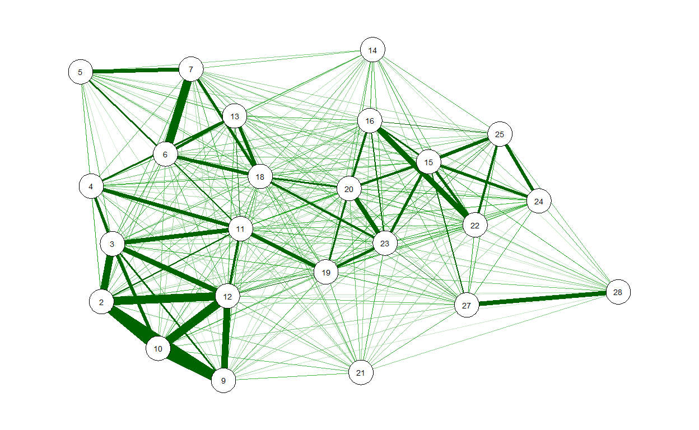
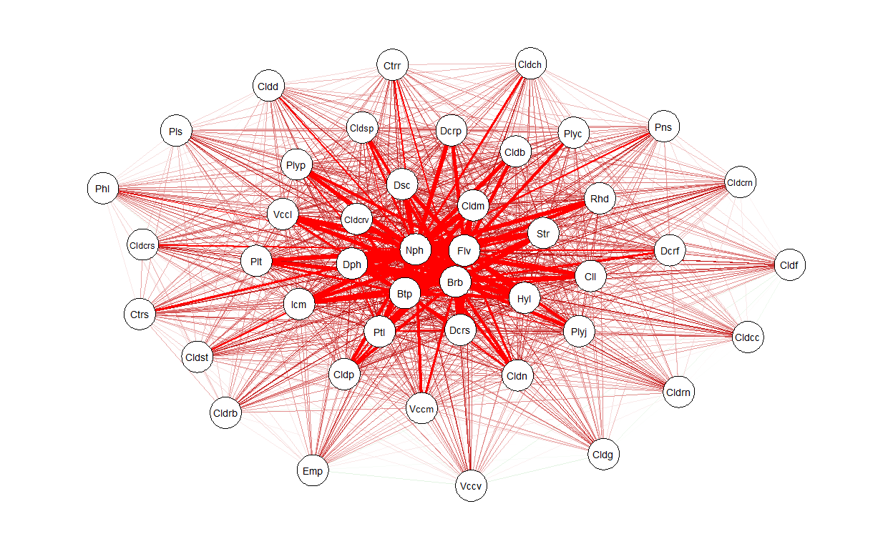
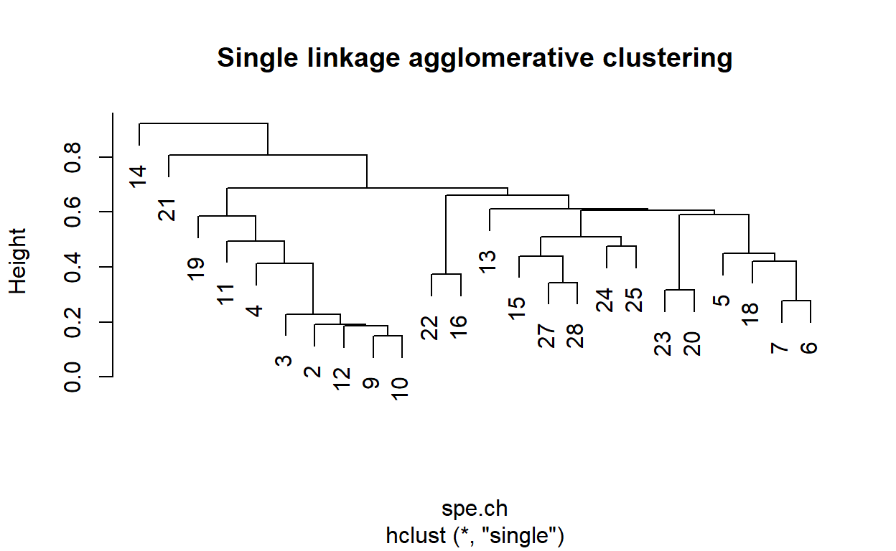
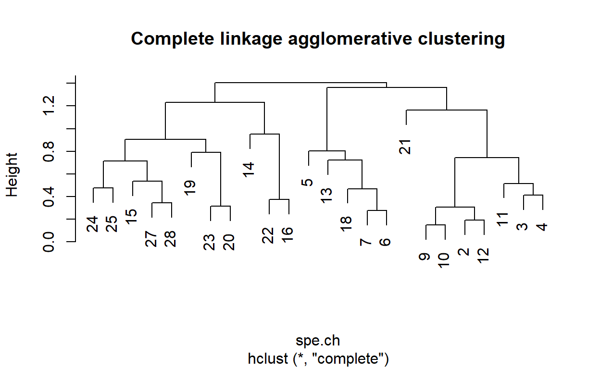
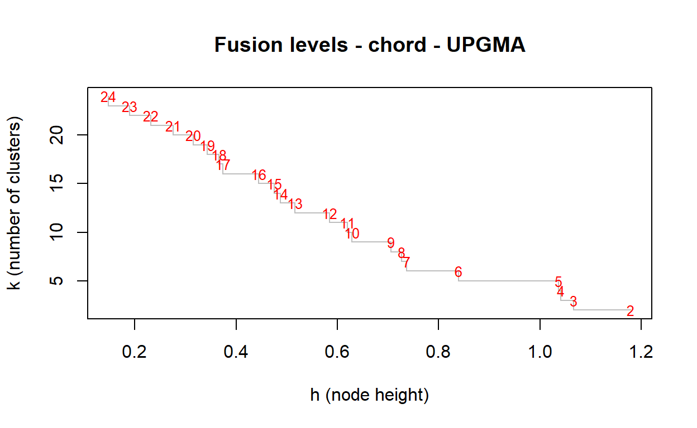
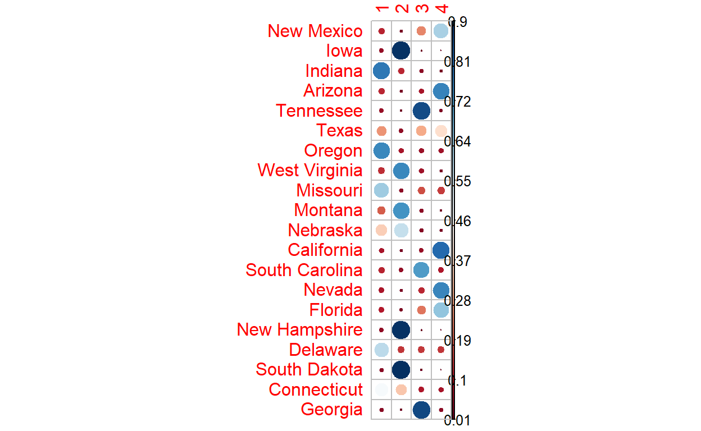

library(vegan)
library(ade4)
library(gclus)
library(qgraph)
library(factoextra)
library(fpc)
library(ggplot2)
library(gridExtra)
library(e1071)
library(corrplot)
library(tree)
library(rpart)
library(rattle)
library(randomForest)
library(caret)
library(devtools)
library(mvabund)
library(mvpart) # install_github("cran/mvpart", force = T) # after devtools
library(MVPARTwrap) # install_github("cran/MVPARTwrap", force = T) # after devtools
source('https://www.dipintothereef.com/uploads/3/7/3/5/37359245/coldiss.r') # import coldiss () function (Borcard et al. 2011)
source ('https://www.dipintothereef.com/uploads/3/7/3/5/37359245/panelutils.r')
Ecological phenomena are inherently complex, and it is rare that a single variable is sufficient to describe an ecological system. Therefore, it is common to deal with:
multiple explanatory variables
multiple response variable
Multivariate analyses may reveal patterns that would not be detectable by combination of univariate methods.

Applications

Five types of scientific inquiries usually suit to the application of multivariate methods.
Sorting and grouping: many ecological questions are concerned with the similarity or dissimilarity. Ex:Cluster analysis, non Metric Dimensional Scaling (nMDS)
Data reduction or structural simplification: summarize multiple variables through a comparatively smaller set of ‘synthetic’ variables. Ex: Principal Component Analysis (PCA)
Hypothesis testing: detect and test pattern in the data (be careful of data dredging) . Ex: MANOVA, PERMANOVA, ANOSIM
Investigation of the dependence among variables: dependence among response variables, among explanatory variables, or among both. Ex: Redundancy analysis and other constrained analysis
Prediction: once the dependence detected and characterized multivariate models may be constructed in a very similar as we did before with univariate models.

Data Structure
In ecology, the’typical’ dataset used in multivariate analyses will be represented by:
objects in row (e.g. samples can be sites, time periods, etc.)
measured variables for those objects in columns (e.g. species, environmental parameters, etc.)

Important note: observations on object are not necessarily independent on those made on another object, and a mixture of dependent and independent objects is possible e.g. site and year
Measured variables can be binary, quantitative, qualitative, rank-ordered, or even a mixture of them. If variables do not have uniform scale (e.g. environmental parameters measured in different units or scales), they usually have to be transformed before performing further analyses.
Standardization: provides dimensionless variables and removes the influence of magnitude differences between scales and units
Normalization: aims at correcting the distribution shapes of certain variables.
arcsin (x)family of transformations for percentage and proportionslog (x + constant)for variables departing moderately from normal distributionsqrt (x + constant)for variables departing slightly from normal distributionHellinger transformation to make data containing many zeros suitable for PCA or RDA, the ‘double zeros’ problem.
Chord transformation to give less weight to rare species (especially when rare species are not truly rare)
…
The function decostand from the vegan package offers an easy way to transform your data. The varespec data frame has 24 rows and 44 columns. Columns are estimated cover values of 44 lichen species. The variable names are formed from the scientific names, and are self explanatory for anybody familiar with vegetation type / lichen species.
# ?varespec
data (varespec)
varespec[1:5,1:5]
Callvulg Empenigr Rhodtome Vaccmyrt Vaccviti
18 0.55 11.13 0.00 0.00 17.80
15 0.67 0.17 0.00 0.35 12.13
24 0.10 1.55 0.00 0.00 13.47
27 0.00 15.13 2.42 5.92 15.97
23 0.00 12.68 0.00 0.00 23.73# log, hellinger, and presence/absence transformations
varespec.log<-decostand(varespec,'log')
varespec.hell<-decostand(varespec,'hellinger')
varespec.pa<-decostand(varespec,'pa')
varespec.pa [1:5,1:5]
Callvulg Empenigr Rhodtome Vaccmyrt Vaccviti
18 1 1 0 0 1
15 1 1 0 1 1
24 1 1 0 0 1
27 0 1 1 1 1
23 0 1 0 0 1Ressemblance
Most methods of multivariate analysis are explicitly or implicitly based on the comparison of all possible pairs of objects or descriptors.
Comparison takes the form of association measures which are assembled in a square and symmetrical association matrix of dimension \(n\) x \(n\) when objects are compared, or \(p\) x \(p\) when variables are compared. The choice of a suitable association coefficient is crucial for further analysis.
When pairs of objects are compared, the analysis is said to be in Q mode.When pairs of descriptors are compared, the analysis is said to be in R mode.

Q mode
Virtually, all distance or similarity measures used in ecology are symmetric: the coefficient between pairs of objects is the same!
But how to deal with double-zeros?
the zero value has the same meaning as any other values (e.g. 0mg/L of O2 in deep anoxic layer of a lake)
the zero value in matrix of species abundances (or presence-absence) can not always be counted as an indication of resemblance (presence has an ecological meaning, but no conclusions on the absence: e.g. is the absence of a given nationality in this class means that no students from this specific country are in NTU? And is it an element to evaluate the similarity with other university (high similarity because many nationalities probably absent ? No, but at same sample size 1/0 becomes informative)
Because of the double-zeros problem, 2 classes of association measures exist based on how they deal with this issue”.
The symmetrical coefficients will consider the information from the double-zero (also called ‘negative matched’).
The asymmetrical coefficients will ignore the information send from the double-zero.
When analyzing species data, it is often recommended to use asymmetrical coefficients unless you have reason to consider each double absence in the matrix (e.g. controlled experiment with known community composition or ecologically homogenous areas with disturbed zones)
* Common presence/absence-based dissimilarity metrics**
We use Jaccard Similarity (S7) to find similarities between sets. So first, let’s learn the very basics of sets.


Now going back to Jaccard similarity.The Jaccard similarity measures similarity between finite sample sets, and is defined as the cardinality of the intersection of sets divided by the cardinality of the union of the sample sets. Suppose you want to find jaccard similarity between two sets A and B it is the ration of cardinality of A ∩ B and A ∪ B.

Other distances applying to presence-Absence data: Sørensen (S8), Ochiai (S14)
Common abundance-based dissimilarity metrics
When your community data samples include abundance information (as opposed to simple presence-absence) you have a wider choice of metrics to use in calculating (dis)similarity.
When you have abundance data your measures of (dis)similarity are a bit more “refined” and you have the potential to pick up patterns in the data that you would otherwise not see using presence-absence data.
There are many metrics that you might use to explore (dis)similarity. Four of them are particularly common:
- Bray-Curtis
- Canberra
- Manhattan
- Euclidean
You can get the spreadsheet here to examine how to compute them in details
Euclidean distance (D2) is the most commonly-used of our distance measures. For this reason, Euclidean distance is often just to referred to as “distance”. When data is dense or continuous, this is the best proximity measure. The Euclidean distance between two points is the length of the path connecting them.This distance between two points is given by the Pythagorean theorem.

Here the abundance of a species from one sample is subtracted from its counterpart in the other sample. Instead of ignoring the sign, the result is squared (which gives a positive value):
\(E_d=\sqrt{\sum (x_i-y_j)^2}\)
Manhattan distance is a metric in which the distance between two points is the sum of the absolute differences of their Cartesian coordinates. In simple way of saying it is the absolute sum of difference between the x-coordinates and y-coordinates. Suppose we have a Point A and a Point B: if we want to find the Manhattan distance between them, we just have to sum up the absolute x-axis and y–axis variation. We find the Manhattan distance between two points by measuring along axes at right angles.

This is the simplest dissimilarity metric to compute:
\(CB_d = \sum|x_i-x_j|\)
Bray-Curtis (D14) dissimilarity is the golden ditance metric in ecology.At first, you subtract the abundance of one species in a sample from its counterpart in the other sample but ignore the sign. The second component is the abundance of a species in one sample added to the abundance of its counterpart in the second sample. If a species is absent, then its abundance should be recorded as 0 (zero).
\(BC_d = \frac {\sum |x_i-x_j|}{\sum(x_i+x_j)}\)

The Canberra dissimilarity uses the same components as Bray-Curtis but the components are summed differently:
\(C_d = \sum \frac { |x_i-x_j|}{(x_i+x_j)}\)

Many other ‘distances’ exist, each with their code

Those distance can be computed from an un-transformed or transformed matrix.
Computation
The functions vegdist from the veganpackage and dist from the stats package compute dissimilarity indices useful and popular among community ecologists.
# using varespec dataset
spe<-varespec
# quantitative data
# Bray-Curtis dissimilarity matrix on raw data
spe.db <- vegdist(spe)
# Bray-Curtis dissimilarity matrix on log-transformed data
spe.dbln <- vegdist(log1p(spe)) # log(x+1)
# Chord distance matrix
spe.norm<-decostand(spe,'nor')
spe.dc <- vegdist(spe.norm)
# Hellinger distance matrix
spe.hel<-decostand(spe,'hel')
spe.dh <- vegdist(spe.hel)
# using environmental dataset varechem, clear interpretation of double zeros use Euclidean distance D1
data(varechem)
env <- varechem
env.st<-decostand(env,'stan') # standardized [or scale(env)]
env.de<-vegdist(env.st,method='euc') # then compute D1
# binary data
# Jaccard dissimilarity matrix using vegdist()
spe.dj1 <- vegdist(spe,'jac',binary=T)# binary p/a
# Jaccard dissimilarity matrix using dist()
spe.dj2 <- dist(spe,'binary')
# Sorensen dissimilarity matrix using vegdist()
spe.ds<-vegdist(spe,binary=T)
# Ochiai dissimilarity matrix using dist.binary() (ade4)
spe.och<-dist.binary(spe, method=7)
Matrix visualization
Among many way to visualize similiarty matrix: the package gclusand the function coldiss (Borcard et al. 2011) offer nice nice heat map options
coldiss(spe.db,byrank=F,diag=T) # for the bc dissimilarity on raw data

coldiss(spe.dbln,byrank=F,diag=T) # for the bc dissimilarity on log-transformed data

coldiss(env.de, diag=T) # for the environmental data

In the untransformed distance matrix, the small differences in abundant species have the same importance as small differences in species with few individuals.
Distance matrices can also be visualized through a network of similarities:
qgraph(1-spe.db, layout='spring', vsize=4)

Note 1: In Q mode similarity from binary data can be interpret by a simple matching coefficient S1: for each pair of sites, it is the ratio between the number of double 1s plus double 0s and the total number of variables.
Note 2: For mixed types variables, including categorical or qualitative multiclass variables use Gower’s similarity (S15). It is easily computed in R using daisy function built in the cluster package. Avoid vegdist with method='gower', which is appropriate for quantitative and presence-absence, but not for multiclass variables. Overall, gowdis from the package FD is the most complete function to compute Gower’s coefficient in R, and commonly used in trait-based approach analyses.
R mode
Correlation type coefficents are commonly used to compare variable in R mode. Remember:
Parametric (Pearson coefficient)
Non-parametric (Spearman, Kendall for quantitative or semi-quantitative data)
Chi-square statistic + its derived forms for qualitative variables
Binary coefficient such as Jaccard, Sorensen, and Ochiai for presence-absence data
…
spe.t <- t(spe)# transpose species matrix
spe.t.chi <- decostand(spe.t,'chi.square') # Chi-square transformation
spe.t.D16 <-dist(spe.t.chi)# euclidean distance
coldiss(spe.t.D16, diag=T) # visualization

qgraph(1-spe.t.D16, layout='spring', vsize=4)

In R mode, the use of Pearson coefficient is very common. Applied on binary variables, r Pearson is called the point correlation coefficient. Using the function panelutils (Borcard et al. (2011):
# Pearson r linear correlation among env. variable
env.pearson <- cor(env) # default method = 'pearson')
env.pearson <- round(env.pearson,2)
# re-order the variables prior to plotting
env.o<-order.single(env.pearson)
# need panelutils () on ceiba
pairs (env[,env.o], lower.panel=panel.smooth, upper.panel=panel.cor,diag.panel=panel.hist, main='Pearson Correlation Matrix')

Practice M1: Using the tikus data set from the package mvabund - check ?tikus. Select observation for the year 1981, 1983, and 1985 only (noted 81, 83 and 85). Build a Bray-Curtis dissimilarity matrix among selected observations. Plot heat map of the respective matrix. Build a network of species co-occurence (presence/absence) based on your selection. Push both your .Rmd and .html files into a public repository available from your Github account.You will share with me be email [vianneydenis@g.ntu.edu.tw] the address (URL) of this repository (such as https://github.com/vianneydenis/OCEAN5098.git) before next Monday in order for me to check your work. The title of your email should be `Practice M1 (your name: your student no.).
Cluster
We often aim to recognize discontinuous subsets in an environment which is represented by discrete (taxonomy) changes but perceived as continuous changes in ecology.
Clustering consists in partitioning the collection of objects (or descriptors in R-mode). Clustering does not test any hypothesis.
Clustering is an explanatory procedure which helps to understand data with complex structure and multivariate relationships, and is a very useful method to extract knowledge and information especially from large datasets.
Many clustering approaches rely on association matrix, which stresses on the importance of the choice of an appropriate association coefficient.
Families
Sequential or Simultaneous algorithms (most of the clustering algorithm)
Agglomerative or Divisive
Monothetic (cluster members with common prop.) versus Polythetic (distance between elements defines membership)
Hierarchical versus Non-hierarchical (flat)
Probabilistic (decision tree) versus non-probabilistic methods
Hard and Soft (may overlap)
Calculate numerical classification often requires two arguments: matrix of distances among samples (ecological resemblance, D) and the method to us e.g.: name of the clustering algorithm.
Common hierarchical clustering methods are available through the function hclust from the stats package. Be careful of:
Data dredging clustering produces tree-like structure. You don’t choose clustering method according to how your tree looks like.
The suitable method is usually carefully selected and/or evaluated according to the data set you are dealing with and your initial hypotheses (some may not make sense)
Hierarchical Clustering
- Single linkage agglomerative clustering (neighbor sorting)
Single linkage allows object to agglomerate easily to a group since a link to a single object of the group suffices to induce fusion. This is the ‘closest’ friend’ procedure.
commonly produced chain dendrograms: a pair is linked to a third object
agglomerates objects on the basis of their shortest pairwise distance
partitions difficult to interpret, but gradients quite clear
e.g. Single linkage agglomerative clustering computed on chord distance matrix
# Step 2: single linkage agglomerative clustering
spe.ch.single <-hclust(spe.ch,method='single')
# plot function
plot(spe.ch.single, main='Single linkage agglomerative clustering' )

- Complete linkage agglomerative clustering (furthest neighbor sorting)
A group admits a new member only at the distance corresponding to the furthest object of the group: one could say that the admission requires unanimity of the group.
dendrograms look a bit like rakes – some cluster merge together at the highest dissimilarity
allow an object (or a group) to agglomerate with another group only at the distance corresponding to that of the most distant pair of objects
e.g. Complete linkage agglomerative clustering computed on chord distance matrix
spe.ch.complete<-hclust(spe.ch,method='complete')
plot(spe.ch.complete, main='Complete linkage agglomerative clustering')

Average agglomerative clustering
it is the method the most common in ecology (species data)
this family comprises four methods that are based on average dissimilarities among objects or on the centroids of cluster,

e.g. Average agglomerative clustering (UPGMA) computed on chord distance matrix
spe.ch.UPGMA<-hclust(spe.ch,method='average')
plot(spe.ch.UPGMA, main='Average (UPGMA) agglomerative clustering')

Ward’s Minimum Variance clustering
Ward method is also a favorite clustering method: Unlike the others. Instead of measuring the distance directly, it analyzes the variance of clusters. Ward’s is said to be the most suitable method for quantitative variables.
it is based on linear model criterion of least square: within-group sum of square (i.e. the square error of ANOVA) is minimized.
Note: Ward method is based on Euclidean model. It should not be combined with distance measures, which are not strictly metric such as the popular Bray-Curtis distance.

Clustering quality
There are many ways to evaluate the overall quality of the chose clustering algorithms and therefore of their representations.
- the cophenetic correlation related distances extracted from the dendrogram (function
copheneticon ahclustobject) with ditances in our original distance matrices. A higher correlation means a better representation of the initial matrix.
# Single linkage clustering
spe.ch.single.coph <- cophenetic (spe.ch.single)
cor(spe.ch,spe.ch.single.coph)
[1] 0.6684868# complete linkage clustering
spe.ch.complete.coph <- cophenetic (spe.ch.complete)
cor(spe.ch,spe.ch.complete.coph)
[1] 0.8212132# Average clustering
spe.ch.UPGMA.coph <- cophenetic (spe.ch.UPGMA)
cor(spe.ch,spe.ch.UPGMA.coph)
[1] 0.8586625# Ward clustering
spe.ch.ward.coph <- cophenetic (spe.ch.ward)
cor(spe.ch,spe.ch.ward.coph)
[1] 0.716064- the shepard-like diagram is a plot that represents orginal distances against the cophentic distances. Can be combined with cophentic correlation seen above.
par(mfrow=c(2,2))
plot(spe.ch,spe.ch.single.coph,xlab='Chord distance',ylab='Chophenetic distance',asp=1, main=c('Single linkage',paste('Cophenetic correlation',round(cor(spe.ch,spe.ch.single.coph),3))))
abline (0,1)
lines(lowess(spe.ch,spe.ch.single.coph),col='red')
plot(spe.ch,spe.ch.complete.coph,xlab='Chord distance',ylab='Chophenetic distance',asp=1, main=c('Complete linkage',paste('Cophenetic correlation',round(cor(spe.ch, spe.ch.complete.coph),3))))
abline (0,1)
lines(lowess(spe.ch, spe.ch.complete.coph),col='red')
plot(spe.ch,spe.ch.UPGMA.coph,xlab='Chord distance',ylab='Chophenetic distance',asp=1, main=c('UPGMA',paste('Cophenetic correlation',round(cor(spe.ch,spe.ch.UPGMA.coph),3))))
abline (0,1)
lines(lowess(spe.ch,spe.ch.UPGMA.coph),col='red')
plot(spe.ch,spe.ch.ward.coph,xlab='Chord distance',ylab='Chophenetic distance',asp=1, main=c('Ward clustering',paste('Cophenetic correlation',round(cor(spe.ch,spe.ch.ward.coph),3))))
abline (0,1)
lines(lowess(spe.ch,spe.ch.ward.coph),col='red')

dev.off()
null device
1 Interpretable clustering groups
- Fusion Level values
The plot of the Fusion Level Values is further used a diagnostic of interpretable cluster groups. It examines values where a fusion between two branches of a dendrogram occurs. Speifically, this graph is is useful whenever you want to define an interpretable cutting levels.
plot(spe.ch.UPGMA$height, nrow(spe):2,
type='S',main='Fusion levels - chord - UPGMA',
ylab='k (number of clusters)', xlab='h (node height)', col='grey')
text (spe.ch.UPGMA$height,nrow(spe):2, nrow(spe):2, col='red', cex=0.8)

The graph of fusion level values shows clear jump after each fusion between 2 and 6 groups Let’s cut our dendrogram at the corresponding distance Do the groups makes sense? Do you obtain groups containing a substantial number of sites?
plot(spe.ch.UPGMA)
rect.hclust(spe.ch.UPGMA, k=6) # number of group
rect.hclust(spe.ch.UPGMA, h=0.79) # with height

Let’s repeat the same for all the clustering methods:
par(mfrow=c(2,2))
# fusion level - single linkage clustering
plot(spe.ch.single$height,
nrow(spe):2, type='S',main='Fusion levels - chord - single',
ylab='k (number of clusters)', xlab='h (node height)', col='grey')
text (spe.ch.single$height,nrow(spe):2, nrow(spe):2, col='red', cex=0.8)
# fusion level - complete linkage clustering
plot(spe.ch.complete$height,
nrow(spe):2, type='S',main='Fusion levels - chord - complete',
ylab='k (number of clusters)', xlab='h (node height)', col='grey')
text (spe.ch.complete$height,nrow(spe):2, nrow(spe):2, col='red', cex=0.8)
# fusion level - UPGMA clustering
plot(spe.ch.UPGMA$height, nrow(spe):2,
type='S',main='Fusion levels - chord - UPGMA',
ylab='k (number of clusters)', xlab='h (node height)', col='grey')
text (spe.ch.UPGMA$height,nrow(spe):2, nrow(spe):2, col='red', cex=0.8)
# fusion level - the ward clustering
plot(spe.ch.ward$height, nrow(spe):2,
type='S',main='Fusion levels - chord - Ward',
ylab='k (number of clusters)', xlab='h (node height)', col='grey')
text (spe.ch.ward$height,nrow(spe):2, nrow(spe):2, col='red', cex=0.8)

All graphs look a but different: there is no single ‘truth’ among these solution and each may provide insight onto the data. However the Chord UPGMA received the best supported in both the cophenetic correlation and sheppard-like diagram. Therefore, fusion levels may have have a stronger support examined with this cluster approach.
One can compared classification by cutting tree cutree and comparing grouping using contingency tables:
k<-5 # Number of groups (conscensus)
spe.ch.single.g <- cutree(spe.ch.single, k)
spe.ch.complete.g <- cutree(spe.ch.complete, k)
spe.ch.UPGMA.g <- cutree(spe.ch.UPGMA, k)
spe.ch.ward.g <- cutree(spe.ch.ward, k)
table(spe.ch.single.g,spe.ch.complete.g) # Single vs complete
spe.ch.complete.g
spe.ch.single.g 1 2 3 4 5
1 5 7 0 0 0
2 0 1 0 7 0
3 0 0 2 0 0
4 0 0 1 0 0
5 0 0 0 0 1If two classifications provided the same group contents, the contingency table would show only non zero frequency value in each row and each column. It is never the case here.
The Silhouette widths indicator
The silhouette width is a measure of the degree of membership of an object to its cluster based on the average distance between this object and all objects of the cluster to which is belongs, compared to the same measure for the next closest cluster.
Silhouette widths range from 1 to 1 and can be averaged over all objects of a partition
The greater the value is, the greater the better the object is clustered Negative values mean that the corresponding objects have probably placed in the wrong cluster (intra group variation inter group variation).


the Elbow method
This method looks at the percentage of variance explained (SS) as a function of the number of cluster
One should choose a number of clusters so that adding another cluster doesn’t give much better explanation
At some point the marginal gain will drop, giving an angle in the graph. The number of clusters is chosen at this point, hence the “elbow criterion” (wss) .
fviz_nbclust(spe.norm, hcut, diss=dist(spe.norm, method='euclidean'),method = "wss",hc_method = "average")
#fviz_nbclust(spe.norm, hcut, diss=dist(spe.norm, method='euclidean'),method = "silhouette",hc_method = "average")
The Mantel test
Compares the original distance matrix to (binary) matrices computed from dendrogram cut at various level
Chooses the level where the matrix (correlation between the two is the highest
The Mantel correlation is in its simplest sense, i.e. the equivalent of a Pearson r correlation between the values in the distance matrices
Comparison between the distance matrix and binary matrices representing partitions
## Mantel test
# Optimal number of clusters
# according to mantel statistic
# Function to compute a binary distance matrix from groups
grpdist<-function(x){
require (cluster)
gr<-as.data.frame(as.factor(x))
distgr<-daisy(gr,'gower')
distgr
}
# run based on the UPGMA clustering
kt<-data.frame(k=1:nrow(spe),r=0)
for (i in 2:(nrow(spe)-1)){
gr<-cutree(spe.ch.UPGMA,i)
distgr<-grpdist(gr)
mt<-cor(spe.ch,distgr, method='pearson')
kt[i,2] <- mt
}
k.best <- which.max (kt$r)
plot(kt$k,kt$r,
type='h', main='Mantel-optimal number of clusters - UPGMA',
xlab='k (number of groups)',ylab="Pearson's correlation")
axis(1,k.best,
paste('optimum', k.best, sep='\n'), col='red',font=2, col.axis='red')
points(k.best,max(kt$r),pch=16,col='red',cex=1.5)

- And many others indicators
See R packages NbClust for determining the relevant number of clusters in a data set.
Charrad, M., Ghazzali, . N., Boiteau, V., & Niknafs, A. (2014). NbClust: An R Package for Determining the Relevant Number of Clusters in a Data Set. Journal of Statistical Software, 61(6), 1–36. https://doi.org/10.18637/jss.v061.i06
Clustering options
- Visualize groupings
plot(spe.ch.UPGMA, main='Average linkage')
rect.hclust(spe.ch.UPGMA, k=3)
rect.hclust(spe.ch.UPGMA, k=8, border = 'blue')

- Spatial clustering (example)
# ?doubs
data(doubs)
doubs.spe<-doubs$fish
doubs.spa<-doubs$xy
# remove empty sample 8 from both datasets
doubs.spe <- doubs.spe[-8,]
doubs.spa <- doubs.spa[-8,]
# Calculates hierarchical cluster analysis of species data
eucl.ward <- hclust (d = dist (doubs.spe), method = 'ward.D')
# Dendrogram with the observed groups
par(mfrow=c(1,2))
plot (eucl.ward)
rect.hclust (eucl.ward, k = 4, border = 1:4)
# Spatial distribution of samples with projection of hierarchical classification
eucl.ward.cluster <- cutree (eucl.ward, k = 4)
plot (y ~ x, data = doubs.spa, pch = eucl.ward.cluster, col = eucl.ward.cluster, type = 'b', main = 'Euclidean distance - Ward method')
dev.off()
null device
1 - Heat map & clustering visualization (example)
We must reorder objects (function reorder.hclust) so that their order in the dissimilarity matrix is respected . This does not affect the topology of the dendrogram.
spe.chwo<-reorder.hclust(spe.ch.ward,spe.ch)
dend<-as.dendrogram(spe.chwo)
heatmap(as.matrix(spe.ch),Rowv=dend,symm=TRUE, margin=c(3,3))

Practice M2: Using tikus data set and subest on years 1981, 1983 and 1985: compute the three common clustering methods (single, complete, average) on a Bray-Curtis dissimilarities matrix. Compare resulting dendrograms using cophenetic correlation and Shepard-like diagram. Choose method with the one with the highest cophenetic correlation and produce a heat map of the reordered distance matrix together with a visualization of the related dendrogram.
Non-Hierarchical Clustering
(NOTE ON FUZZY)
Create partition, without hierarchy.
Determine a partition of the objects into k groups, or clusters, such as the objects within each cluster are more similar to one other than to objects in the other clusters.
It require an initial configuration (user usually determine the number of groups, k), which will be optimized in a recursive process (often random). If random, the initial configuration is run a large number of times with different initial configurations in order to find the best solution.
The most known and commonly used non-hierarchical partitioning algorithms is k-means clustering (MacQueen, 1967), in which, each cluster is represented by the center or means of the data points belonging to the cluster.

Three crital steps:
Initialization (various Methods: Lloyd’s algorithm is the mots common): k observations from the dataset are used as the initial means. The random partition method first randomly assigns a cluster to each observation and then proceeds to the update step, thus computing the initial mean to be the centroid of the cluster’s randomly assigned points.
Assignment step Assign each observation to the cluster with the nearest mean: that with the least squared Euclidean distance (Mathematically, this means partitioning the observations according to the Voronoi diagram generated by the means)
Update step Recalculate means (centroids) for observations assigned to each cluster.
The algorithm has converged when the assignments no longer change. The algorithm is not always guaranteed to find the optimum.

The algorithm is often presented as assigning objects to the nearest cluster by distance. Using a different distance function other than (squared) Euclidean distance may prevent the algorithm from converging. Various modifications of k-means such as k-medoids [PAM (Partitioning Around Medoids, Kaufman & Rousseeuw, 1990] have been proposed to allow using other distance measures. In this case, cluster is represented by one of the objects in the cluster.
Note: if variable in the data table are not dimensionally homogenous, they must be standardized prior to partitioning
Let’s watch a video to undertand clearly what is K-means clustering: https://www.youtube.com/watch?v=4b5d3muPQmA
If this is not clear, check this video with an example with playing cards.
K-means/PAM implementation
The aims is to identify high-density regions in the data. To do so, the method iteratively minimizes an objective function the total error sum of squares (TESS or SSE), which is the sum of the within groups sums-of squares. It is basically the sum, over the k groups, of the sums of squared distance among the objects in the group, each divided by the number of objects in the group.
 With a pre-determined number of groups, recommended function is:
With a pre-determined number of groups, recommended function is: kmeans from the stats package. Argument nstart will repeat the analysis a large number of time using different initial configuration until finding the best solution.
Note: do not forget to normalized your data
# k-means partitioning of the pre-transformed species data
spe.kmeans <- kmeans(spe.norm, centers=5, nstart=100)
# k-means group number of each observation spe.kmeans$cluster
spe.kmeans$cluster
18 15 24 27 23 19 22 16 28 13 14 20 25 7 5 6 3 4 2 9 12 10 11
5 3 3 3 1 4 2 2 3 5 2 1 3 5 5 5 4 4 4 4 4 4 4
21
1 # Comparison with the 5-group classification derived from UPGMA clustering
comparison<-table(spe.kmeans$cluster,spe.ch.UPGMA.g)
comparison
spe.ch.UPGMA.g
1 2 3 4 5
1 0 2 0 0 1
2 0 2 0 1 0
3 0 5 0 0 0
4 0 0 8 0 0
5 5 0 0 0 0# Visualize k-means clusters
fviz_cluster(spe.kmeans, data = spe.norm,geom = "point",
stand = FALSE, ellipse.type = "norm")

Best partition
Evaluating partition using elbow and silouette indicators:
# elbow, UPGMA, chord
fviz_nbclust(spe.norm, hcut, diss=dist(spe.norm, method='euclidean'),method = "wss",hc_method = "average")

# silhouette, UPGMA, chord
fviz_nbclust(spe.norm, hcut, diss=dist(spe.norm, method='euclidean'),method = "silhouette",hc_method = "average")

# elbow, kmeans, chord
fviz_nbclust(spe.norm, kmeans, method = "wss")

# silhouette, kmeans, chord
fviz_nbclust(spe.norm, kmeans, method = "silhouette")

The function cascadeKM in vegan package is a wrapper for the kmeans function
creates several partitions forming a cascade from small (argument
inf.grto large values of k (argumentsup.gr)the cascade proposes the ‘best solution’ for partitioning using the
calinskiorssicriterion
spe.KM.cascade<-cascadeKM(spe.norm,inf.gr=2,sup.gr=10,iter=100,criterion='calinski')
plot(spe.KM.cascade,sortg=TRUE)

For pam clustering (package cluster):
fviz_nbclust (spe.norm , pam, method = "silhouette")

fviz_nbclust (spe.norm , pam, method = "wss")

pamk(spe.norm, krange=2:10, criterion='asw')$nc
[1] 6pam6<-pam(spe.norm, 6)
pam3<-pam(spe.norm, 3)
plot(silhouette(pam6))

plot(silhouette(pam3))

# plot1<-fviz_nbclust(spe.norm, hcut, method = "silhouette", hc_method = "average")
# plot2 < - fviz_nbclust (spe.norm , pam, method = "silhouette")
# plot3<-fviz_nbclust(spe.norm, kmeans, method = "silhouette")
# grid.arrange(plot1, plot2,plot3, ncol=3)
Visualizing partitions
pam.res<-pam(spe.norm, k=6)
km.res <- kmeans(spe.norm, centers=3)
plot4 <-fviz_cluster(km.res,spe.norm, stand = FALSE,geom = "point",ellipse.type = "norm")
plot5 <-fviz_cluster(pam.res,spe.norm, stand = FALSE,geom = "point",ellipse.type = "norm")
grid.arrange(plot4, plot5, ncol=2)

Fuzzy clustering
The fuzzy clustering is considered as soft clustering or soft k-means, in which each element has a probability of belonging to each cluster. In other words, each element has a set of membership coefficients corresponding to the degree of being in a given cluster. In fuzzy clustering, points close to the center of a cluster, may be in the cluster to a higher degree than points in the edge of a cluster. The degree, to which an element belongs to a given cluster, is a numerical value varying from 0 to 1.
This is fundamnetally different from k-means and k-medoid clustering, where each object is affected exactly to one cluster. k-means and k-medoids clustering are known as hard or non-fuzzy clustering.
In other words, in non-fuzzy clustering an apple can be red or green (hard clustering). Here, the apple can be red AND green (soft clustering). The apple will be red to a certain degree [red = 0.5] as well as green to a certain degree [green = 0.5].
The fuzzy c-means (FCM) algorithm is one of the most widely used fuzzy clustering algorithms. The centroid of a cluster is calculated as the mean of all points, weighted by their degree of belonging to the cluster. The function fanny [cluster package] can be used to compute fuzzy clustering. ‘FANNY’ stands for fuzzy analysis clustering.
set.seed(123)
res.fanny<-fanny(spe.norm, 3)
fviz_cluster(res.fanny, ellipse.type = "norm", repel = TRUE,
palette = "jco", ggtheme = theme_minimal(),
legend = "right")

res.fanny # details on membership
Fuzzy Clustering object of class 'fanny' :
m.ship.expon. 2
objective 3.792824
tolerance 1e-15
iterations 194
converged 1
maxit 500
n 24
Membership coefficients (in %, rounded):
[,1] [,2] [,3]
18 45 33 21
15 35 49 16
24 35 44 20
27 34 48 18
23 39 44 18
19 33 34 33
22 36 43 21
16 38 42 20
28 34 45 21
13 41 32 27
14 39 38 24
20 40 43 17
25 34 47 18
7 45 32 23
5 42 32 26
6 44 31 25
3 20 17 63
4 31 24 45
2 15 13 72
9 18 16 66
12 15 13 72
10 16 14 70
11 33 28 39
21 36 34 30
Fuzzyness coefficients:
dunn_coeff normalized
0.39226789 0.08840183
Closest hard clustering:
18 15 24 27 23 19 22 16 28 13 14 20 25 7 5 6 3 4 2 9 12 10 11
1 2 2 2 2 2 2 2 2 1 1 2 2 1 1 1 3 3 3 3 3 3 3
21
1
Available components:
[1] "membership" "coeff" "memb.exp" "clustering"
[5] "k.crisp" "objective" "convergence" "diss"
[9] "call" "silinfo" "data" fviz_silhouette(res.fanny, palette = "jco",
ggtheme = theme_minimal())
cluster size ave.sil.width
1 1 7 0.17
2 2 10 0.30
3 3 7 0.57
Another example using the function cmeans from the package e1071 and a dataset on the criminality in USArrests
set.seed(123)
# Load the data
data("USArrests")
# Subset of USArrests
ss <- sample(1:50, 20)
df <- scale(USArrests[ss,])
# Compute fuzzy clustering
cm <- cmeans(df, 4)
# Visualize using corrplot
corrplot(cm$membership, is.corr = FALSE)

using our Doubs dataset

Practice M3: Using iris data set: (1) make a K-means cascade and use the silhouette width indicator to determine the optimal number of clusters. (2) since we know that 3 species are involved, group the data into 3 clusters (common sense) using the kmeans function. How many points are wrongly classified between optimal in (1) and the solution here? Plot both solutions.
my_cols <- c("#00AFBB", "#E7B800", "#FC4E07")
pairs(iris[,1:4], pch = 19, cex = 0.5,
col = my_cols[iris$Species],
lower.panel=NULL)